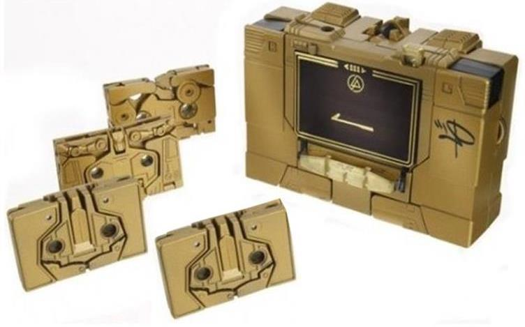
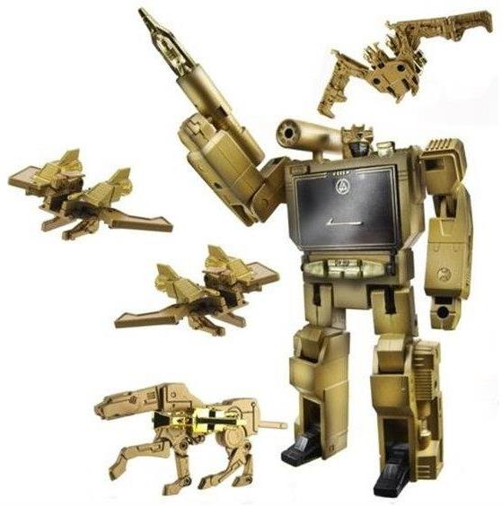

Allegiances:
Decepticon
Price
: Varies by store-- around
$125 (U.S.)
Difficulty of Sticker Application
:
N/A
(NOTE: Because this set is a repaint, this
is not a full-blown review. This mainly covers any changes made to the
molds and the color schemes, and merely compares it to the original G1
Soundwave w/ Laserbeak & Ravage. For a review on the molds themselves--
with the exception of Ratbat, as this is the first review I've done with
his G1 toy-- read the review of G1 Reissue Soundwave w/ Laserbeak &
Ravage
here
.)
 Buzzsaw
Buzzsaw
Difficulty of Transformation
: Very
Easy
Color Scheme
: Milky pale yellowish
brown and chrome gold
Individual Rating
: 6.9
See Soundwave's review for details.
 Laserbeak
Laserbeak
Difficulty of Transformation
: Very
Easy
Color Scheme
: Milky pale yellowish
brown and chrome gold
Individual Rating:
6.9
See Soundwave's review for details.
 Ratbat
Ratbat
Difficulty of Transformation
: Very
Easy
Color Scheme
: Milky pale yellowish
brown and chrome gold
Individual Rating
: 7.1
Ratbat's alternate mode
is, like the rest of his fellow compatriots in this set, a cassette tape.
Some of the G1 cassettes tend to have alt modes where it's quite obvious
where their robot/animal mode parts are and don't have entirely rectangular
shapes on both sides in this mode, but not Ratbat. There's a couple of
telltale hinges molded in the backside, but generally this makes for one
solid-looking cassette tape (minus the minor lines in between plastic parts,
which are completely unavoidable, of course). As much as I dislike this
set being so one-tone in color, it does work well in making the cassette
modes look even more solid, as there's no differentiating plastic colors
to make some parts stand out more than others.
In bat mode, Ratbat
also makes for a fairly convincing mechanical bat-- his wings are definitely
his main feature in this mode, folding out from the sides of the cassette
mode like they do. They're a bit overly angular, but otherwise quite decent-looking.
His body, though a bit TOO two-dimensional, is otherwise pretty good from
a frontal, diagonal, or back view. He also has a tiny head, ears, and feet
which fold out-- the ears in particular are quite small, intricate pieces
even for a modern toy, much less a G1 mold. Unfortunately, this can also
be their downfall-- said ears are a bit loose and can flop around quite
easily. The little feet help to keep him stable, but aren't really good
for much else, seeing how short they are. For overall articulation in this
mode, Ratbat can move side-to-side at the ears, at two points near the
"base" of each wing, back-and-forth at each leg and at a mid-point on each
wing, and his head can rotate up and down a bit-- all told, pretty good
movement for a little cassette tape. He has two boosters which claw-like
fronts which can peg into his cassette mode holes in this mode to form
decent back weapons. Like most G1 weapons, though, they can't be stored
effectively in cassette mode. Oh, and in case you're wondering, Ratbat's
diecast metal is his chest piece in this mode.
While keeping in mind
the limiations of G1 toys and cassette tapes, Ratbat manages to look pretty
darn good overall. Yes, he's rather two-dimensional like almost every other
G1 cassette toy, but his cassette mode looks pretty solid and his bat mode
doesn't have any glaring flaws (though his floppy ears can be a tad annoying),
and he's got some pretty cool wings to boot. My favorite mold out of Soundwave's
cassette tapes, personally.
 Ravage
Ravage
Difficulty of Transformation
: Very
Easy
Color Scheme
: Milky pale yellowish
brown and chrome gold
Individual Rating
: 5.0
See Soundwave's review for details.
 Soundwave
Soundwave
Difficulty of Transformation
: Easy
Color Scheme
: Milky pale yellowish
brown and some tinted clear plastic, black, and chrome gold
Individual Rating
: 8.0
The "Linkin Park" edition
of Soundwave is limited to 2,000 pieces worldwide, and features the band's
signature on the left side of Soundwave's cassette mode, as well as their
logo in the top center of Soundwave's chest. It appears that the band doesn't
have much imagination when it comes to color schemes, though-- almost the
sole color on Soundwave is a milky pale yellowish brown. Promo pics like
those above make it look like he's painted completely gold, but that's
not the case at all-- it's a tannish,
maybe
gold-tinted plastic,
but that's it. And that's considerably uglier than a metallic gold, as
well as Soundwave's original more varied color scheme. The parts that are
chromed gold look pretty nice, but they aren't different enough from the
plastic to serve as contrast colors. Soundwave does have a few-- VERY few--
paint apps in black, namely his faceplate, signature, and feet, but that's
it. A shame, as using that color more liberally would have improved his
overall look a bit. His cassette minions don't even have that-- they're
completely either milky yellowish brown or chrome gold, and as such are
pretty boring themselves, sadly. This lack of differentiating colors is
especially weird given that both Buzzsaw AND Laserbeak are in the set--
given that there's only one plastic color, that means they're both completely
identical for this release.
No mold changes have
been made to this release of Soundwave and his cassettes.
Linkin Park Soundwave
is pretty much the definition of superfluous merchandise. Both Soundwave
and his cassettes are completely one color, and not a metallic gold one
at that (like is apparently promised in the Hasbro promo pics). Given that
and the high price tag attached to this set because of its limited run,
I could only recommend this set to people who just can NOT find a G1 Soundwave
toy for cheaper and want one or those who are rather obsessive Linkin Park
& Soundwave fans. Ohterwise this is an easy pass.
Review by Beastbot
(Images from Hasbro .)